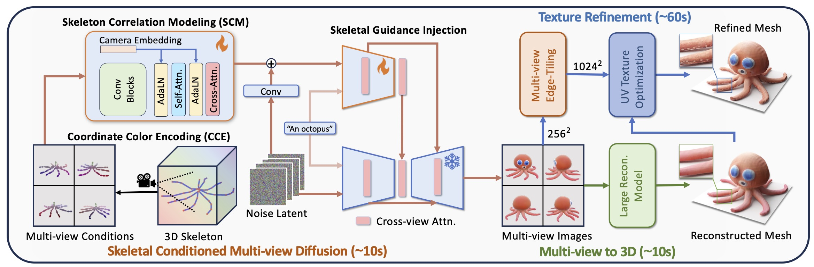

- Skeletons can effectively represent and describe object anatomy and pose. Unfortunately, past studies are often limited to human skeletons. In this work, we generalize skeletal conditioned generation to arbitrary structures.
- First, we design a reliable mesh skeletonization pipeline to generate a large-scale mesh-skeleton paired dataset.
Based on the dataset, a multi-view and 3D generation pipeline is built. Our method achieves instant generation of multi-view and 3D contents which are aligned with given skeletons.

Generation Results on Synthetic Skeletons
Our work achieves conditional generation with arbitrary skeletal structures. Multi-view images are first generated, and 3D meshes are reconstructed and refined. The generated contents are aligned with the given skeletons. The skeletons below are from our Objaverse-SK val set.
A creature with a pig head and a fish body.
A carp, elongated body, large golden scales.
A rattle snake.
An alien, with a large head, big eyes.
Cartoon character in Fall Guys.
A robot.
A duck.
A plesiosaur with a long neck.
A swan with feathers, long neck.
A seagull, white feathers with gray on the back and wings.
A small bat with leathery wings, pointed ears, dark fur.
A penguin, black back, white belly, flipper-like wings.
A polar bear, large body, black nose.
A wolf, thick grey fur, pointed ears, bushy tail.
A bull, muscular body, short black fur, curved horns.
A Golden Retriever, friendly expression, floppy ears.
A donkey, grey fur, long ears.
A sea turtle, broad oval shell, smooth olive-green scales.
A scorpion, segmented body, curved tail with stinger, two large pincers.
A black and red spider.
A lizard, elongated body, scaly skin.
A potted plant.
A green cactus, with multiple arms.
A tree stump, roots and trunk.
Generation Results on Human-made Skeletons
Our method can generalize to arbitrary human-made skeletons (from ModelResource dataset), enabling flexible and efficient structural description. Disscussion can be found in Appendix.
French Bulldog.
Dog resembling a wolf.
Rat and lizard.
Triceratops dinosaur.
Crocodile, turtle, bird, and camel figures.
Fish resembling a bird.
Nintendo character resembling a spiky-headed creature.
Pokemon resembling a fox and beaver.
Bunny.
Mouse with a tail.
Mouse-like teddy bear with outstretched arms.
Turtle Pokemon Baby.
Horned Pokemon character.
Cat with a bow tie and tail.
Small teddy bear styled as a Nintendo Pokemon character.
Animation Results
Our method can be applied to produce animation. Given a motion sequence of a skeleton, the corresponding mesh is generated and rigged with the skeleton. Then the mesh can be animated by the skeleton.